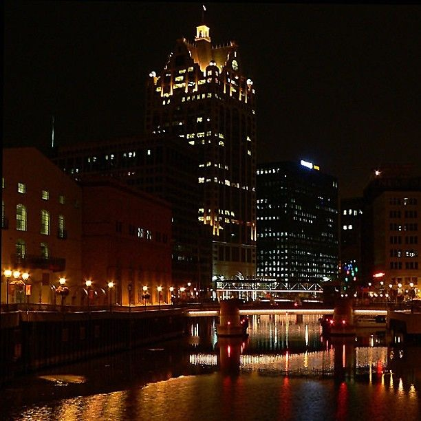
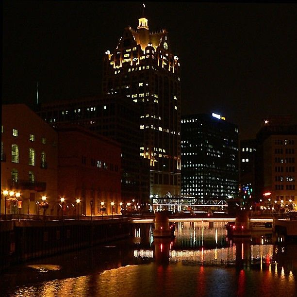

Milwaukee at a Glance
Milwaukee, Wisconsin is one of the best places to visit. It is the largest city in the state of Wisconsin. By population, Milwaukee is the 31st largest city in the United States! The city is located on the western shore of Lake Michigan, giving it the beauty of a great lake. Being close to the lakefront gives Milwaukee a "lake-breeze", which can be very nice in the summertime. If you enjoy having all four seasons, you would love Milwaukee. We have a rapidly changing climate, with cold, windy, snowy winters, and warm, humid summers. Lake Michigan is not the only benefit, however. Milwaukee also lies along the shores of the Menomonee River, the Kinnickinnic River, and the Milwaukee River. These lakes and rivers really add to the beauty of the city.
 
